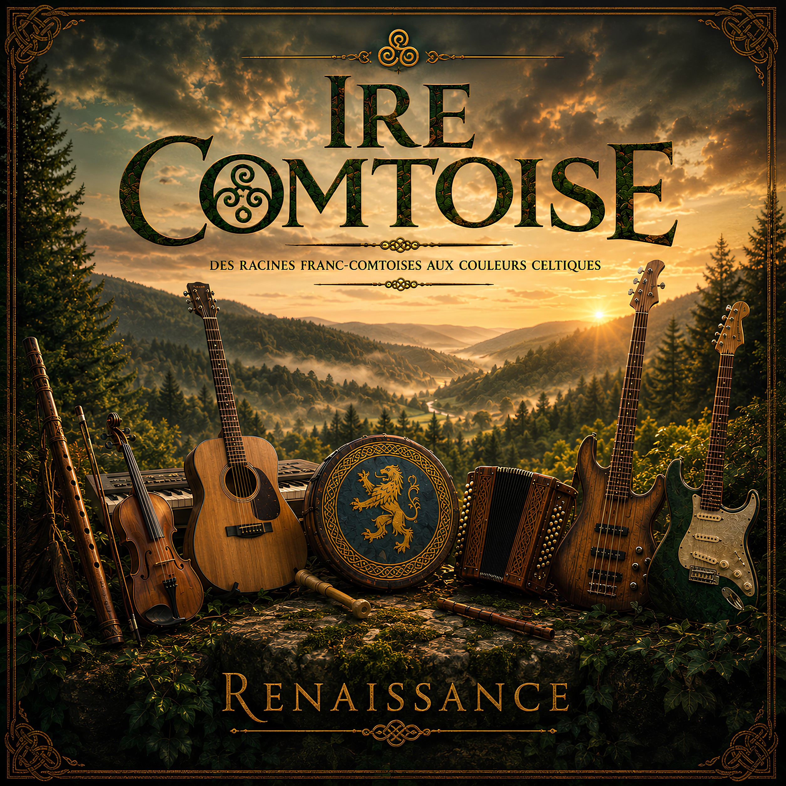

Des racines franc-comtoises aux couleurs celtiques
Écouter RenaissanceIre Comtoise est un projet musical inspiré par les paysages, les traditions et les légendes de Franche-Comté.
À travers des compositions originales et des réinterprétations, notre musique mêle folk, rock et influences celtiques dans un univers chaleureux, vivant et authentique.

Premier album d’Ire Comtoise, Renaissance invite à un voyage musical entre patrimoine régional, énergie folk-rock et couleurs celtiques.
Neuf titres pour découvrir un univers où se croisent traditions, légendes, personnages et paysages franc-comtois.
Pour nous écrire :
lizerne.music@gmail.com